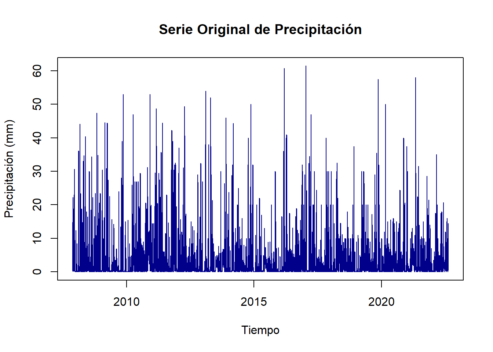
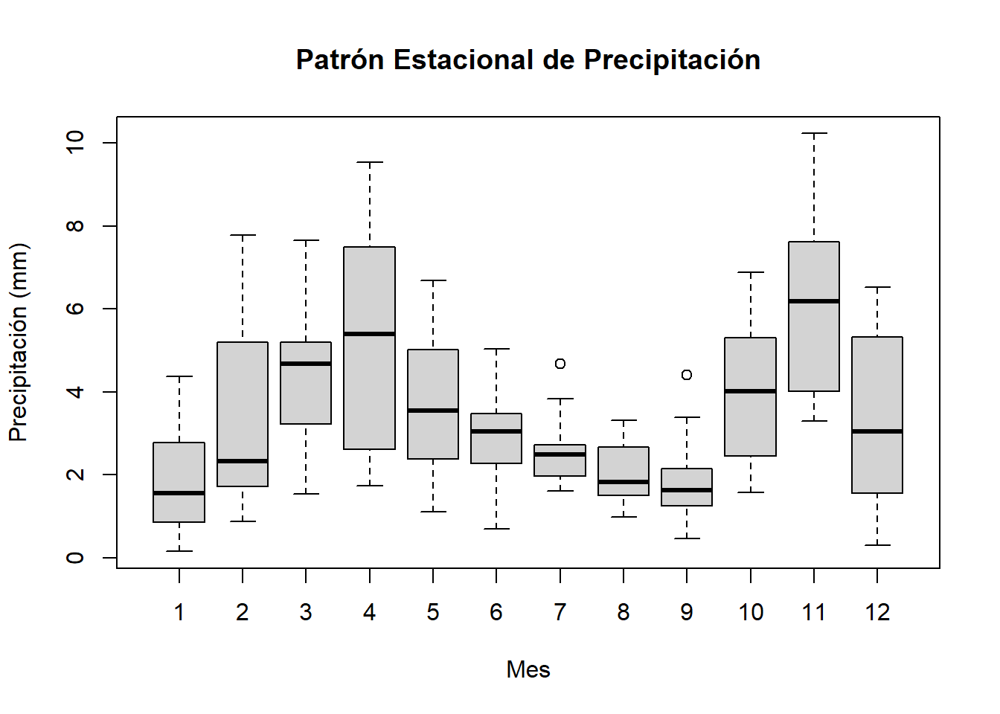

Sección 5 Modelos Estacionarios y Ajuste Lineal
Este análisis complementa el trabajo previo sobre los métodos de Holt-Winters mediante la exploración de modelos estacionarios y ajustes lineales de la serie temporal. El objetivo es identificar y modelar los componentes fundamentales de la serie, asegurando su estacionariedad para realizar pronósticos más precisos.
5.1 Metodología
Para el análisis de estacionariedad y ajuste de modelos lineales, se realizó el siguiente proceso:
- Análisis exploratorio de la serie temporal
- Verificación de estacionariedad
- Transformaciones necesarias para lograr estacionariedad
- Ajuste de modelos ARIMA (Autoregressive Integrated Moving Average)
- Validación de residuales
- Generación de pronósticos
5.1.1 Análisis Exploratorio de la Serie
El análisis inicial de la serie temporal revela sus características fundamentales y patrones de comportamiento:
Code

La serie muestra una alta variabilidad con valores que oscilan principalmente entre 0 y 40 mm de precipitación diaria, con algunos valores extremos que alcanzan los 60 mm. Se observa una ligera tendencia descendente a lo largo del período, particularmente visible después de 2015.
Code

La estacionalidad de las precipitaciones se evidencia claramente en el gráfico, donde se observan patrones distintivos a lo largo del año. Los meses 4 (abril) y 11 (noviembre) presentan las mayores medianas de precipitación y mayor dispersión, como se observa en el tamaño de las cajas. Los meses de julio a septiembre (7-9) muestran una notable disminución en las precipitaciones, con cajas más pequeñas y medianas más bajas, indicando un período más seco y con menor variabilidad. Se observan algunos valores atípicos (outliers) especialmente en los meses 7 y 10, representados por puntos individuales, que indican eventos de lluvia inusualmente intensos para esos meses. La transición entre estaciones húmedas y secas no es abrupta, sino que muestra cambios graduales, con meses intermedios como mayo (5) y octubre (10) que presentan niveles moderados de precipitación.
5.1.2 Verificación y Transformación para Estacionariedad
Para asegurar la estacionariedad, necesaria para el modelado ARIMA, se aplicarón pruebas formales y transformaciones:
## Augmented Dickey-Fuller Test
## alternative: stationary
##
## Type 1: no drift no trend
## lag ADF p.value
## [1,] 0 -46.0 0.01
## [2,] 1 -32.7 0.01
## [3,] 2 -26.3 0.01
## [4,] 3 -21.6 0.01
## [5,] 4 -19.0 0.01
## [6,] 5 -17.2 0.01
## [7,] 6 -15.8 0.01
## [8,] 7 -14.7 0.01
## [9,] 8 -13.8 0.01
## [10,] 9 -12.8 0.01
## Type 2: with drift no trend
## lag ADF p.value
## [1,] 0 -54.4 0.01
## [2,] 1 -40.4 0.01
## [3,] 2 -33.6 0.01
## [4,] 3 -28.4 0.01
## [5,] 4 -25.6 0.01
## [6,] 5 -23.8 0.01
## [7,] 6 -22.2 0.01
## [8,] 7 -21.1 0.01
## [9,] 8 -20.2 0.01
## [10,] 9 -19.1 0.01
## Type 3: with drift and trend
## lag ADF p.value
## [1,] 0 -54.4 0.01
## [2,] 1 -40.4 0.01
## [3,] 2 -33.7 0.01
## [4,] 3 -28.4 0.01
## [5,] 4 -25.7 0.01
## [6,] 5 -23.8 0.01
## [7,] 6 -22.3 0.01
## [8,] 7 -21.1 0.01
## [9,] 8 -20.3 0.01
## [10,] 9 -19.1 0.01
## ----
## Note: in fact, p.value = 0.01 means p.value <= 0.01Code
## Augmented Dickey-Fuller Test
## alternative: stationary
##
## Type 1: no drift no trend
## lag ADF p.value
## [1,] 0 -107.6 0.01
## [2,] 1 -78.3 0.01
## [3,] 2 -66.0 0.01
## [4,] 3 -57.1 0.01
## [5,] 4 -50.4 0.01
## [6,] 5 -45.6 0.01
## [7,] 6 -42.0 0.01
## [8,] 7 -39.2 0.01
## [9,] 8 -37.0 0.01
## [10,] 9 -35.3 0.01
## Type 2: with drift no trend
## lag ADF p.value
## [1,] 0 -107.5 0.01
## [2,] 1 -78.3 0.01
## [3,] 2 -66.0 0.01
## [4,] 3 -57.1 0.01
## [5,] 4 -50.4 0.01
## [6,] 5 -45.6 0.01
## [7,] 6 -42.0 0.01
## [8,] 7 -39.2 0.01
## [9,] 8 -37.0 0.01
## [10,] 9 -35.3 0.01
## Type 3: with drift and trend
## lag ADF p.value
## [1,] 0 -107.5 0.01
## [2,] 1 -78.3 0.01
## [3,] 2 -66.0 0.01
## [4,] 3 -57.1 0.01
## [5,] 4 -50.4 0.01
## [6,] 5 -45.6 0.01
## [7,] 6 -42.0 0.01
## [8,] 7 -39.2 0.01
## [9,] 8 -37.0 0.01
## [10,] 9 -35.3 0.01
## ----
## Note: in fact, p.value = 0.01 means p.value <= 0.01El análisis de estacionariedad mediante la prueba de Dickey-Fuller Aumentada (ADF) revela resultados significativos:
- Serie Original:
- Los valores del estadístico ADF son altamente significativos (p ≤ 0.01) para todos los rezagos analizados
- Los tres tipos de prueba (sin deriva ni tendencia, con deriva, con deriva y tendencia) muestran resultados consistentes
- Los valores ADF varían desde -54.4 hasta -12.8, todos indicando un fuerte rechazo de la hipótesis nula de no estacionariedad
- Serie Diferenciada:
- La serie diferenciada muestra estadísticos ADF aún más extremos, con valores desde -107.6 hasta -35.3
- Mantiene la significancia estadística (p ≤ 0.01) en todos los casos
- Los resultados son robustos a través de los diferentes tipos de prueba y rezagos
5.1.3 Ajuste del Modelo ARIMA
Una vez confirmada la estacionariedad de la serie original, se procedió con el ajuste del modelo ARIMA:
Code
## Series: ts_lluvia
## ARIMA(4,0,1) with non-zero mean
##
## Coefficients:
## ar1 ar2 ar3 ar4 ma1 mean
## 0.8246 -0.0887 -0.0054 0.0414 -0.5681 3.4678
## s.e. 0.1349 0.0391 0.0189 0.0198 0.1348 0.1672
##
## sigma^2 = 41.99: log likelihood = -17671.5
## AIC=35357.01 AICc=35357.03 BIC=35403.14
##
## Training set error measures:
## ME RMSE MAE MPE MAPE MASE ACF1
## Training set 1.697681e-05 6.47636 3.82685 -Inf Inf 0.7483815 0.00040847425.1.4 Validación del Modelo
Se realizó un análisis completo de los residuales para verificar los supuestos del modelo:
Code
# Análisis de residuales
residuales <- residuals(modelo_arima)
# Gráficos diagnósticos
par(mfrow=c(2,2))
# 1. Gráfico de residuales vs tiempo
plot(residuales, type='l',
main='Residuales vs Tiempo',
ylab='Residuales', xlab='Tiempo')
abline(h=0, col='red')
# 2. Gráfico Q-Q para normalidad
qqnorm(residuales)
qqline(residuales)
# 3. ACF de residuales
acf(residuales, main='ACF de Residuales')
# 4. PACF de residuales
pacf(residuales, main='PACF de Residuales')Code
par(mfrow=c(1,1))
# Tests formales
# Test de normalidad con una muestra aleatoria de 5000 observaciones
set.seed(123) # Para reproducibilidad
muestra_residuales <- sample(residuales, min(5000, length(residuales)))
shapiro_test <- shapiro.test(muestra_residuales)
print("Test de Shapiro-Wilk para normalidad (muestra aleatoria):")## [1] "Test de Shapiro-Wilk para normalidad (muestra aleatoria):"##
## Shapiro-Wilk normality test
##
## data: muestra_residuales
## W = 0.6502, p-value < 2.2e-16Code
## [1] "Test de Ljung-Box para independencia:"##
## Box-Ljung test
##
## data: residuales
## X-squared = 11.604, df = 20, p-value = 0.9295.1.5 Generación de Pronósticos
Se generan y visualizan los pronósticos para los próximos períodos:
Code
## Point Forecast Lo 80 Hi 80 Lo 95 Hi 95
## 2022.6192 3.209337 -5.095087 11.51376 -9.491184 15.90986
## 2022.6219 3.353036 -5.220187 11.92626 -9.758577 16.46465
## 2022.6247 3.866086 -4.767571 12.49974 -9.337954 17.07013
## 2022.6274 3.705678 -4.949289 12.36065 -9.530953 16.94231
## 2022.6301 3.618556 -5.068181 12.30529 -9.666662 16.90377
## 2022.6329 3.564108 -5.146237 12.27445 -9.757215 16.88543
## 2022.6356 3.549042 -5.175731 12.27382 -9.794347 16.89243
## 2022.6384 3.535281 -5.197670 12.26823 -9.820616 16.89118
## 2022.6411 3.521959 -5.215952 12.25987 -9.841522 16.88544
## 2022.6438 3.510021 -5.230995 12.25104 -9.858210 16.87825
## 2022.6466 3.500810 -5.242159 12.24378 -9.870407 16.87203
## 2022.6493 3.493776 -5.250407 12.23796 -9.879298 16.86685
## 2022.6521 3.488306 -5.256630 12.23324 -9.885919 16.86253
## 2022.6548 3.483975 -5.261427 12.22938 -9.890963 16.85891
## 2022.6575 3.480545 -5.265146 12.22624 -9.894835 16.85593
## 2022.6603 3.477840 -5.268031 12.22371 -9.897815 16.85350
## 2022.6630 3.475711 -5.270272 12.22169 -9.900115 16.85154
## 2022.6658 3.474034 -5.272018 12.22009 -9.901898 16.84997
## 2022.6685 3.472713 -5.273382 12.21881 -9.903285 16.84871
## 2022.6712 3.471671 -5.274450 12.21779 -9.904367 16.84771
## 2022.6740 3.470851 -5.275287 12.21699 -9.905213 16.84691
## 2022.6767 3.470205 -5.275944 12.21635 -9.905875 16.84628
## 2022.6795 3.469695 -5.276459 12.21585 -9.906394 16.84578
## 2022.6822 3.469294 -5.276865 12.21545 -9.906801 16.84539
## 2022.6849 3.468978 -5.277183 12.21514 -9.907121 16.84508
## 2022.6877 3.468729 -5.277434 12.21489 -9.907373 16.84483
## 2022.6904 3.468532 -5.277631 12.21470 -9.907571 16.84464
## 2022.6932 3.468378 -5.277787 12.21454 -9.907726 16.84448
## 2022.6959 3.468256 -5.277909 12.21442 -9.907849 16.84436
## 2022.6986 3.468160 -5.278005 12.21432 -9.907945 16.844265.1.6 Evaluación del Desempeño del Modelo
Se calculan las métricas de precisión del modelo:
## ME RMSE MAE MPE MAPE MASE ACF1
## Training set 1.697681e-05 6.47636 3.82685 -Inf Inf 0.7483815 0.0004084742Code
# Comparación con datos reales (últimos 30 días)
n <- length(ts_lluvia)
train <- subset(ts_lluvia, end = n-30)
test <- subset(ts_lluvia, start = n-29)
# Ajuste del modelo en datos de entrenamiento
modelo_test <- auto.arima(train)
forecast_test <- forecast::forecast(modelo_test, h = 30)
# Error de predicción
error_pred <- test - forecast_test$mean
print("Error Medio Absoluto de Predicción:")## [1] "Error Medio Absoluto de Predicción:"## [1] 3.3380785.2 Análisis de Resultados
5.2.1 Análisis del Modelo ARIMA
El modelo seleccionado automáticamente es un ARIMA(4,0,1) con media no nula, lo cual indica:
- Un componente autorregresivo de orden 4 (AR(4))
- Ninguna diferenciación necesaria (confirma la estacionariedad inicial)
- Un componente de media móvil de orden 1 (MA(1))
Los coeficientes más significativos son:
- AR1 (0.8246): fuerte dependencia del valor inmediatamente anterior
- MA1 (-0.5681): corrección moderada de errores previos
- Media (3.4678 mm): nivel medio de precipitación diaria
5.2.2 Diagnóstico de Residuales
Análisis Visual:
- Los residuales vs tiempo muestran una varianza relativamente constante alrededor de cero
- El gráfico Q-Q muestra desviaciones de la normalidad, especialmente en las colas
- Las funciones ACF y PACF muestran correlaciones dentro de las bandas de confianza
Tests Formales:
- Test de Shapiro-Wilk: p-valor < 2.2e-16 indica no normalidad de los residuales
- Test de Ljung-Box: p-valor = 0.929 sugiere independencia de los residuales
5.2.3 Evaluación del Desempeño
Las métricas de error muestran:
- Error Medio (ME) cercano a cero (1.70e-05): ausencia de sesgo sistemático
- RMSE de 6.48 mm: error cuadrático medio moderado
- MAE de 3.83 mm: error absoluto medio aceptable
- Error Medio Absoluto de Predicción: 3.34 mm, ligeramente mejor que el MAE del conjunto de entrenamiento
5.2.4 Pronósticos
Los pronósticos generados muestran:
- Valores puntuales cercanos a la media histórica (≈3.5 mm)
- Intervalos de predicción amplios, reflejando la alta variabilidad inherente
- Bandas de confianza del 80% y 95% que capturan adecuadamente la variabilidad histórica
5.2.5 Fortalezas y Limitaciones del Modelo
Fortalezas:
- Captura adecuadamente la estructura de autocorrelación
- Residuales independientes (según Ljung-Box)
- Error de predicción razonable para datos de precipitación diaria
Limitaciones:
- No normalidad de residuales
- MAPE indefinido debido a valores cero en la serie
- Intervalos de predicción amplios
5.2.6 Conclusiones
El modelo ARIMA(4,0,1) proporciona un ajuste aceptable para datos de precipitación diaria, con errores de predicción razonables considerando la alta variabilidad inherente a este tipo de datos. Aunque no cumple el supuesto de normalidad, la independencia de los residuales y la precisión de las predicciones sugieren que es útil para propósitos prácticos de pronóstico a corto plazo.
Las predicciones deben interpretarse con cautela, considerando:
- La amplitud de los intervalos de confianza
- La naturaleza variable de la precipitación
- La tendencia del modelo a regresar hacia la media
Este análisis proporciona una base sólida para la comprensión y predicción del comportamiento de la precipitación diaria, aunque se recomienda complementar con otros indicadores meteorológicos para decisiones críticas.